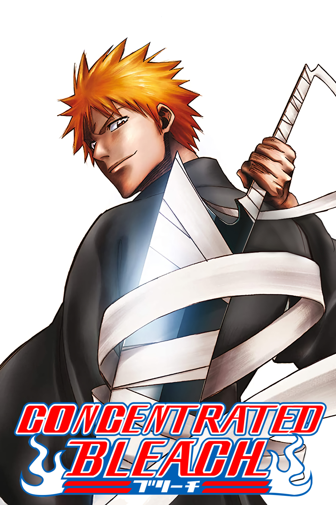

Fan recut — in progress
Recorte hecho por fans — en proceso
CONCENTRATED
BLEACH
BLEACH
COMPRIMIDO
Concentrated Bleach is a fan project like One Pace that recuts the anime with the objective to make it more in line with the original Bleach manga by Tite Kubo. This is accomplished by removing filler scenes not present in the source material, padding and correcting subtitles.
Bleach Comprimido es un proyecto hecho por fans como One Pace que mejora la experiencia del anime de Bleach para que sea más cercano al manga original de Tite Kubo. Esto se logra quitando relleno, escenas extendidas e intentando corregir caracterizaciones de diferentes personajes durante múltiples momentos del anime.
001
001
What is Concentrated Bleach?
¿Qué es Bleach Comprimido?
Concentrated Bleach is a fan project that not only tries to make the anime as faithful to the manga as possible but even ocassionaly adds anime original scenes that make the experience better with the purpose of expanding the world building, making better character interactions, fleshing out moments, etc.
Bleach Comprimido es un proyecto que no solo intenta mantener el anime fiel al manga sino que también incluye escenas originales del anime que mejoran la experiencia con el propósito de expandir el mundo, mejorar interacciones de personajes, mejorar momentos, etc.
It is a WIP which started in November 2024. As of now around half the anime’s length has been covered with English dub, English subs and Spanish subs. To check the project’s status you can see this spreadsheet.
Es un proyecto en proceso que empezó en Noviembre de 2024 y que ahora mismo cubre la mitad del anime original en este momento, teniendo el doblaje y subtítulos en inglés disponibles por completo, mientras que los subtítulos en español están en proceso.
Para consultar el estado del proyecto puedes revisar esta hoja de cálculo.
002
Who is behind Concentrated Bleach?
¿Quién está detrás de Bleach Comprimido?
Concentrated Bleach is made entirely by just one person who is an active member of the team behind One Pace. Within One Pace they take care of the English localization, subtitle editing, timing, typesetting, and publishing.
Bleach Comprimido es un proyecto hecho por una persona que es miembro activo del equipo de One Pace. En One Pace se ocupa de la localización en inglés, revisión de subtítulos, timing, typesetting y es el administrador de contenidos.